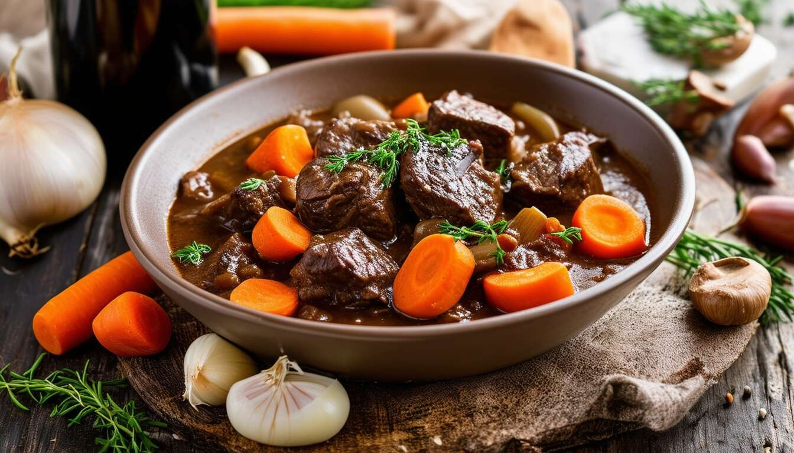

Beef Bourguignon
Odin Recipes

Description
Beef bourguignon (a.k.a. beef Burgundy) is a French beef stew braised in red wine and beef broth. It also prominently features onions, carrots, and mushrooms. The dish has become synonymous with French cuisine.
Ingredients
Marinade:
- 3 cups Burgundy wine
- 2 onions, thinly sliced
- 2 carrots, chopped
- 2 tablespoons brandy
- 1 clove garlic, crushed
- 10 whole black peppercorns
- 1 teaspoon salt
- 1 sprig fresh parsley
- 1 bay leaf
- 2 pounds cubed beef chuck roast
Bourguignon:
- 4 tablespoons olive oil, divided
- ¼ pound bacon, cubed
- 2 onions, chopped
- 3 tablespoons all-purpose flour
- 2 cloves garlic, crushed
- 1 tablespoon tomato paste
- 1 (10.5 ounce) can beef broth
- salt and pepper to taste
- 4 tablespoons butter
- 1 pound fresh mushrooms, sliced
Steps
- For the marinade: Mix wine, sliced onions, carrots, brandy, garlic, peppercorns, salt, parsley, and bay leaf in a large glass or ceramic bowl. Add beef and toss to evenly coat; cover the bowl with plastic wrap and marinate in the refrigerator for 2 days.
- For the bourguignon: Preheat the oven to 300 degrees F (150 degrees C).
- Strain beef from the marinade and shake off excess; pat dry with paper towels. Strain vegetables and set aside; reserve marinade. Heat 2 tablespoons of oil in a large skillet over medium-high heat. Add beef in batches; cook until browned on all sides. Transfer browned beef into a separate medium bowl; set aside.
- Add bacon to the same skillet; cook and stir until lightly browned. Transfer bacon to the bowl with browned beef. Drain the skillet and return it to the heat. Pour 1 cup of reserved marinade into the skillet; bring to a boil while scraping the browned bits of food off the bottom of the pan with a wooden spoon. Return this liquid to the reserved marinade.
- Heat remaining 2 tablespoons oil in the same skillet. Add chopped onions; cook and stir until just tender, about 2 to 3 minutes. Stir in reserved onions and carrots from the marinade; mix well, then use a slotted spoon to transfer vegetables into the bowl with beef.
- Return the skillet to the heat; stir flour in pan drippings until browned, about 1 or 2 minutes. Stir in garlic and tomato paste until combined. Add beef broth, remaining reserved marinade, salt, and pepper. Bring to a boil, whisking to remove any flour lumps; pour over beef mixture in the bowl. Transfer beef mixture into a casserole or baking dish.
- Cook in the preheated oven until beef is tender, about 3 hours; stir occasionally and add water if needed.
- About 10 minutes before serving, melt butter in a skillet over medium-high heat. Add mushrooms and sauté until lightly browned, about 5 to 7 minutes; stir mushrooms into beef mixture until well combined.